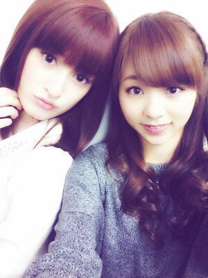
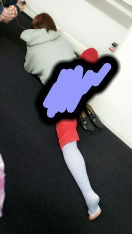

やあ(*´∨`*)/
ろってぃーだよぉ。

握手会の時に更新したのに
何であがってないんだぁ〜(´-`)笑
握手会の前のていで
読んでください(´；ω；｀)
昨日, 新潟アオーレ一周年
記念ライヴが終わったあと、
せちゃん♪とぱしゃりん .
やっぱライヴは
とってもとっても楽しいね(*´ω`*)
来てくださった皆さん //
長い間 待たせしちゃいましたね
(´；ω；｀)
本当にありがとう.
アンダーメンバーのみでの、
制服のマネキンや
君の名は希望のパフォーマンスは
なんだか新鮮だし
すんごく楽しかったよ(((〃∨〃)
制服のマネキンは 星野ポジ
会いかもは 松村ポジ?
涙頃 自分ポジ
13金 自分ポジ
君の名は 秋元ポジ
おいシャン 松村ポジ
↑このセットリストと
ポジションやったよ(*^^*)
見てみてみて 笑

楽屋でせちゃん〜(/〃∨〃)))/
なるほど せちゃんは
こんな体勢で
携帯をさわるんだ(・ω・)笑
カッコイイなぁ。
... 面白いからとっちゃった ))))
ぴょん !
そしてそして 今日は
名古屋握手会でした !
皆さんありがとうね(/・∨・)/
今回のペアは 再びかずみん♪と
わあい わあい )))
かずみん そして
今日来てくれた皆
かずみんfam★の皆
Rotty夢☆の皆
はじめましての方
みーんなっ ありがとうん(/*・ω・)/
ではでは ♪
のし.